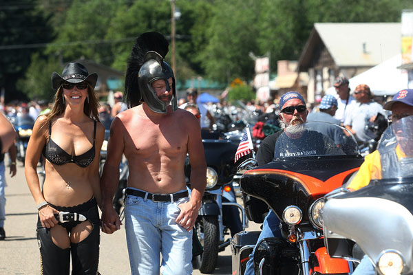
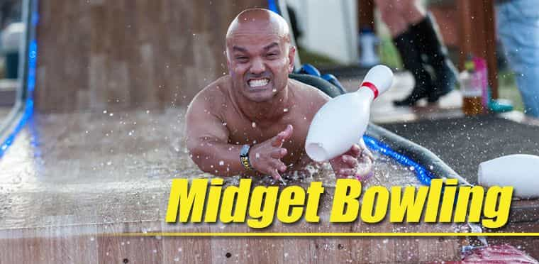
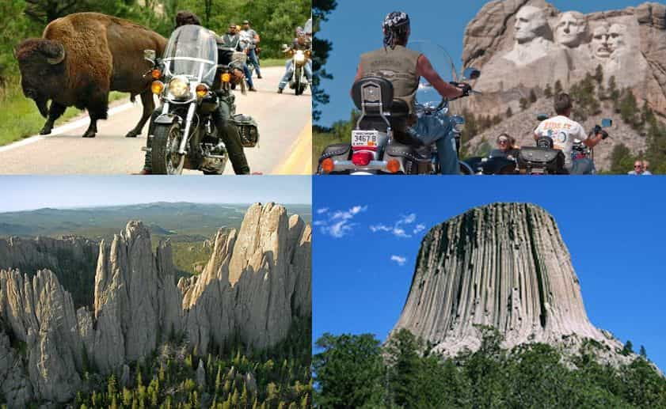
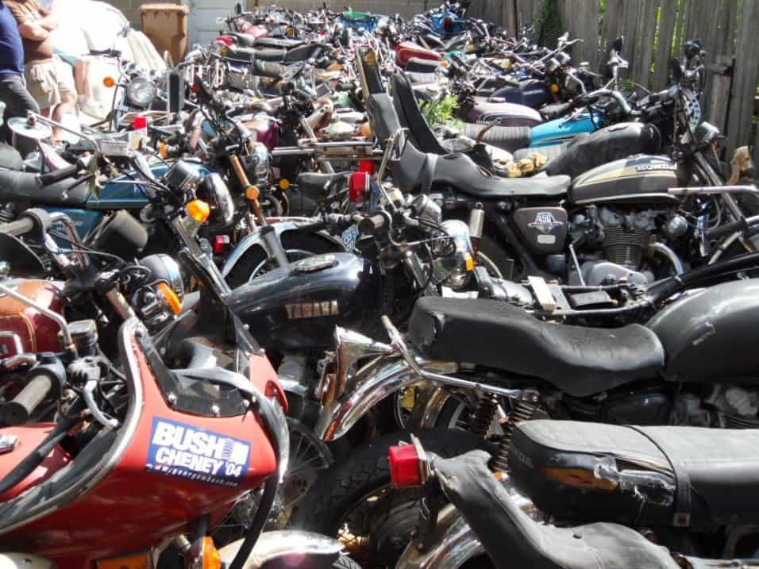
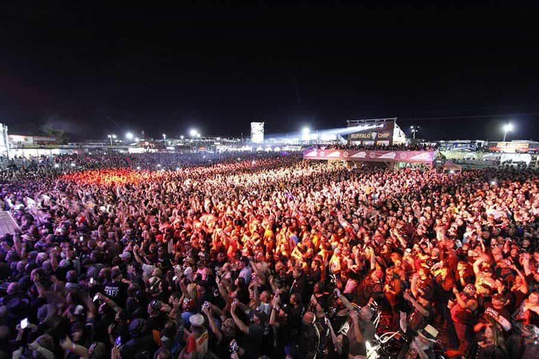
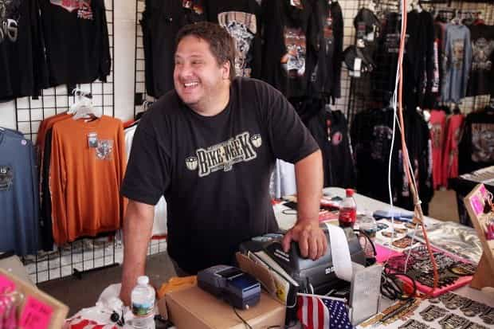

The Sturgis Motorcycle Rally is the largest event of its kind in the world. It’s been held in August in the small town of Sturgis in the Black Hills of South Dakota for over 75 years. It’s big. It’s loud. It’s for bikers. It’s not advertised as family friendly. So why should you attend?
1. It’s already set up

Trying to rent a venue and get everything together for any kind of gathering or rally is time consuming and expensive, especially if you’re being hounded by toxic feminists. Roosh already tried this and it didn’t work out so well.
Sturgis successfully hosted 750,000 bikers at their 75th anniversary in 2015. There’s campgrounds, motels, cabins, RV parks, food, drinks, medical facilities, law enforcement, and every imaginable kind of vendor. Sturgis knows how to host men.
2. Sturgis is not snowflake friendly

There are triggers on every street corner. There are no safe zones. There is nothing to encourage the weak hearted. There really is midget bowling advertised for the 2018 rally.
It’s big, bold, loud, and in-your-face. Nobody’s going to get all offended . . . about anything. Except: don’t knock over a bike! That’s serious business.
3. It’s in the middle of vacation paradise

I’m not going to spend all of my vacation sitting around talking about manly stuff. I’m going to get vacated, recreated and unwound. I’m going to see the sights. I’m going to travel around. I’ll plan each day in the morning and rethink it by noon. Just like most people on vacation.
Our family visited the Black Hills during one or our Great American Road Trips way back when I was 12. Outstanding country with a different viewscape around nearly every corner. You won’t have time to see them all but you can start with Mt. Rushmore, the Badlands, Custer State Park, the Needles Highway, the Crazy Horse Monument and Devils Tower Monument. Or you can skip the crowds and try to find your own place of seclusion in the backroads of the plains, mountains and forests.
4. You don’t need a motorcycle

Once in town, folks mostly just park their bikes and walk. It’s too crowded to ride. The town of Sturgis hosts the rally but most of the action is at the campgrounds. Many of the campgrounds run shuttle buses. So drive to Sturgis, park your car, get out and blend in. Bikers and ROK are part of the same band of brothers.
5. You’ll never be bored

The party never stops and it’s to big to see it all. Here’s an excerpt from a TripAdvisor review:
World class concerts every day at several different venues for 10 days in a row. Over 20 bands playing live every single night. Several different motorcycle races daily at 3 different venues. Motorcycle shows at 10 different venues almost daily. Motorcycle stunt shows daily. Test rides daily from over 6 motorcycle manufacturers. Enough t-shirt and accessories stands to blow your mind. Celebrities everywhere, some riding, some playing, some doing meet and greets and autographs.
I did not attend Woodstock but this blows any event away anywhere. Massive bars with 5 that are a city block long and wide. And a couple more that are half a block in size and dozens of other watering holes to quench your thirst. Bikes, Babes and booze and music of every type. roll, country, rap, blues, southern rock, and many styles of rock n roll.
6. The investment is low; the rewards high

Roosh: you need to reserve a vendor booth of an appropriate size out on the periphery where prices are less. Load up your t-shirts and other gear and set up shop. Tell us where you’re going to be and we’ll find you. That’s all it takes for year one.
Keep it small at first and see how it goes. Keep thinking of what should be done the next year. What worked? What didn’t? This could grow to be whatever we want. And it could continue for year after year.
7. Antifa might show up
There have been unsubstantiated rumors that antifa wants to shut down Sturgis because of the bikers’ propensity to display Confederate and American flags.
Nevertheless, let’s not wait for them. Lets send them engraved invitations on lavender scented paper. Include maps and lists of places to stay. Suggest they get their reservations early. Tell them to bring their own play dough and coloring books but they can buy granola and yogurt on site.
Because if they do show up, there are 500,000 bikers who would really like to sit down and discuss toxic masculinity and flower arranging with them!
Read More: 3 Reasons Why You Should Ride A Motorcycle